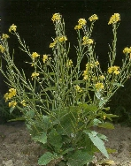
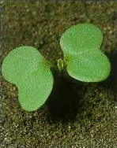
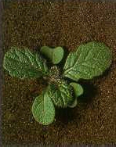

REPCSÉNY RETEK
RAPHANUS RAPHANISTRUM L. (RAPRA)
ÉLETFORMA: T3
TERMÉS: Becőtermése 2-6 cm hosszú, hengeres
keresztbefűződésekkel magonként tagolt, ún. cikkes becő, amely éréskor egymagvú
résztermésekre esik szét. Ez a magház felső részéből alakul, mert az alsó része
meddő. Magvai tehát a természetben a becő megfelelő darabjával képeznek
elterjedési egységet. Egy növény 160 ilyen egységet is képez. Magja barna vagy
sötétbarna, kissé elliptikus és lapított, 2-3 mm. Felszínén finom sejtes
felépítésű receháló látható. Ezerbecőtag: 12,8-14,4 g.
CSÍRANÖVÉNY: Sziklevelei kerekek, kicsípett csúcsúak.
Első levelei fordított tojás alakúak, a következők egyre tagoltabbak, jellemző
lantosak, sötétzöldek.
KIFEJLETT NÖVÉNY: Egyéves, szára erőteljesen ágas,
30-60 cm magas. Oldalágai erősen szétállók. Levelei szórt állásúak, jellegzetesen
lantosak, azaz a csúcsszeletük a legszélesebb, a további szeletek a váll felé
haladva egyre kisebbek és keskenyebbek, sötétzöldek, sokszor szőrösek. Virágzata
fürt, a virágkocsányok virágzáskor többé-kevésbé olyan hosszúak, mint a
csészék. Csészéi szabadok, elliptikus-lándzsásak, keskeny hártyás szegéllyel,
virágzáskor szorosan összezártak. A szirmok még egyszer olyan hosszúak, mint a
csésze, fordított tojásdadok, lekerekített lemezzel, ezek néha enyhén kicsípettek.
Alapszínük halványsárga vagy fehér, erezete lilás. Áprilistól novemberig
virágzik.
ELTERJEDÉSE: Savanyú talajokon, a Dunántól nyugati és
északi részén egyike a legelterjedtebb gyomoknak.
 |
 |